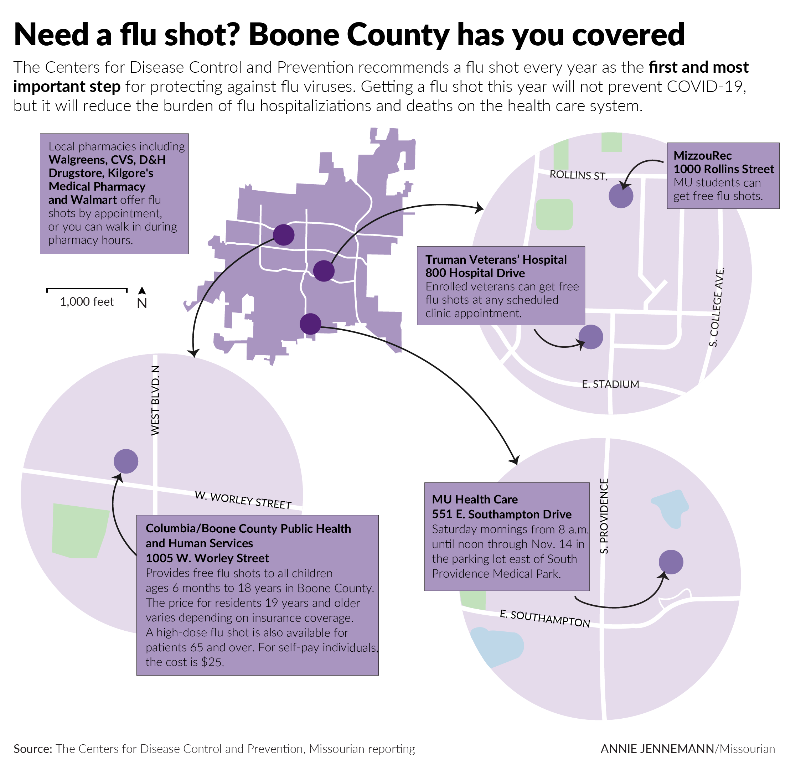
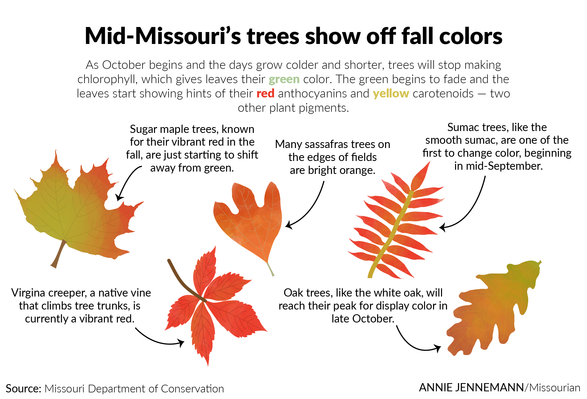

My work samples
![A graphic spread showing Boone County 2020 census data. The spread shows an area line chart of Boone County's population over a century where the population in 2020 reached 183,610 people. The spread also shows a bar chart of the top five growing counties in Missouri from 2010 to 2020 where Boone County is the fifth highest growing county, growing 12.89%. The last part of the spread are 8 mini bar charts showing the change in population for people of different races and ethnicities. The data came from the U.S. Census Bureau.](images/census_spread-01.png)
Most recently, I worked with the other graphics editor at the Missourian to create this spread about 2020 census data in Boone County.
Tool used: Adobe Illustrator
Download
In August, an editor for the Missourian asked me to create a timeline about the history of Missouri in honor of the state's bicentennial. I was given as much space as I needed in the print edition, which resulted in a double-truck timeline that was almost two full pages. I really enjoyed working on this graphic and getting a chance to use my design skills in such a big space.
Tool used: Adobe Illustrator
Download
This is an example of data the other graphics editor and I analyzed for a story at the Missourian. We looked at COVID-19 vaccinations and case rates in each Missouri county. The story was about vaccine rollout in rural areas in Missouri.
Tool used: Tableau Desktop
![A graphic spread of data about medical marijuana and marijuana arrests in Missouri. The spread includes an area line chart showing marijuana possession arrests from 2010 to 2019 broken down by race, a bar chart of possession arrests by age and sex, a heat map of possession arrests per 100,000 people by state, with Wyoming and South Dakota at the highest arrest rate, and an illustration showing the levels of consequences for possessing different amounts of marijuana. The data came from the FBI and the National Organization for the Reform of Marijuana Laws.](images/marijuana-01.png)
This is a spread about marijuana-related arrests in Missouri that I created for my final project in the information graphics class at MU. It is a full-page and was published in the print edition of the Missourian Jan. 2021.
Tool used: Adobe Illustrator
Download This is a graphic I created in the fall of 2020 showing different locations in Boone County that people could receive flu shots.
Tool used: Adobe Illustrator
Download {kind=link}
This was one of my first graphics published in the Missourian about the color of leaves changing color. I love working with illustrations and anything relating to nature. This was a really fun, yet informative, graphic.
Tool used: Adobe Illustrator
Download{kind=link}